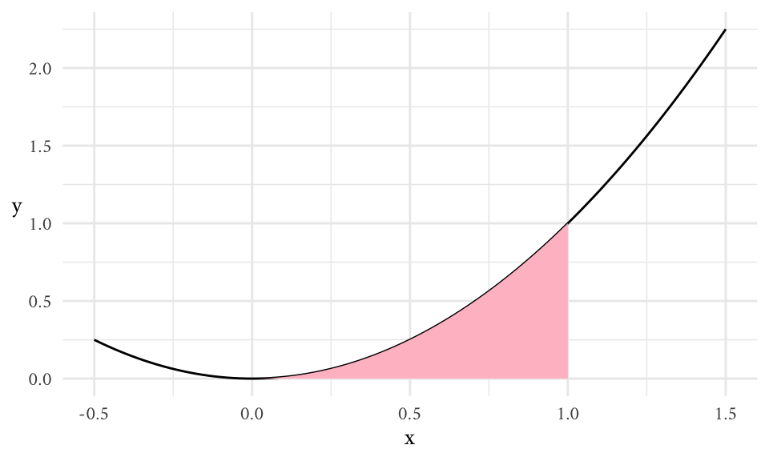
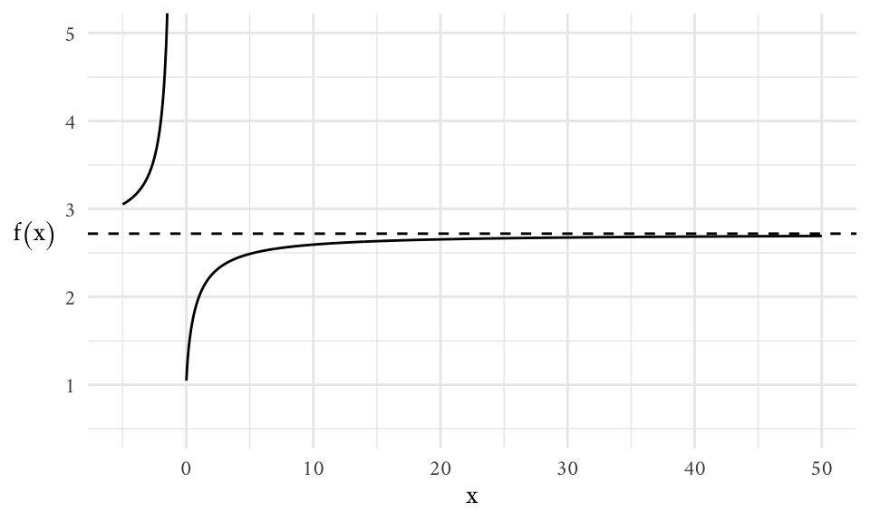
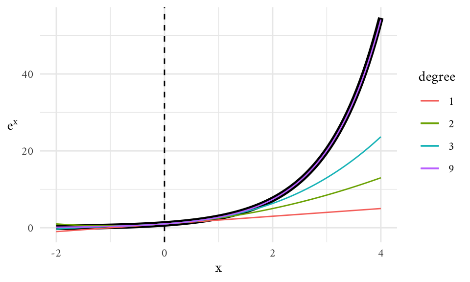

Packages
library(ggplot2)
theme_set(
theme_minimal(base_family = "Amiri") +
theme(axis.title.y = element_text(angle = 0, vjust = 1/2))
)library(ggplot2)
theme_set(
theme_minimal(base_family = "Amiri") +
theme(axis.title.y = element_text(angle = 0, vjust = 1/2))
)Limit Definition
\[ \begin{align} f'(x) = \lim_{h \to 0} \frac{f(x + h) - f(x)}{h}, &&\text{provided the limit exists} \end{align} \tag{1}\]
Derivatives are used to understand instantaneous rates of change, i.e., when \(\Delta x \approx 0\).
This formula is equivalent:
\[ f^\prime (a) = \lim_{b \to a} \frac{f(b) - f(a)}{b-a} \]
For example, the area of a growing square is \(A(x) = x^2\). How does \(A(x)\) change every time \(x\) changes? We have that, for any given value of \(x\), the rate of instantaneous change is given by:
\[ \begin{align} A^\prime (x) = 2x && \text{or} && \frac{dA}{dx} = 2x \end{align} \]
Note. When \(\Delta\) is infinitely small we change notation to \(d\).
If we zoom in on any function at a given point \(a\), a tangent line at \(a\) will be given by the following formula:
\[ y = f(a) + f^\prime (a) (x-a) \]
Critical points
\(c\) is a critical point for the smooth function \(f\) iff \(f^\prime(c) = 0\).
In order to figure out if \(c\) is a local maximum or local minimum, we use the second derivative. The second derivative of \(f\) measures the rate of change of the first derivative. In a nutshell, we find critical points by solving \(f^\prime = 0\). We then plug these values into \(f^{\prime\prime}\). If the result is positive, the critical point is a local minimum; if the result is negative, the critical point is a local maximum.
This procedure does not always work.
Note. For higher order derivatives we use the \(f^{(n)}(x)\) notation, where \(f^{(0)}(x) = f(x)\). We can also use the symbol \(\frac{d^nf}{dx^n}\) for this purpose.
Derivative Rules:
The constant rule—i.e., constants can move into and out of derivatives.
\[ \frac{d}{dt} \bigg[c f(t) \bigg] = c \frac{d}{dt} \bigg[f(t)\bigg] = c \cdot f^\prime (t) \tag{2}\]
The sum rule—i.e., the derivative of the sum is the sum of the derivatives.
\[ \frac{d}{dt}\bigg[ f(t) + g(t) \bigg] = f^\prime (t) + g^\prime (t) \tag{3}\]
The product rule.
\[ \frac{d}{dx} \bigg[f(x) g(x) \bigg] = f(x) g^\prime (x) + g(x) f^\prime(x) \tag{4}\]
The power rule.
\[ \frac{d}{dx} \bigg[ x^n\bigg] = n \cdot x^{n-1} \tag{5}\]
Note. All these rules make it possible to estimate the derivative of any polynomial of the form \(c_nx^n + c_{n-1} x^{n-1} + \dots + c_1\).
The chain rule allows us to find derivatives of compositions.
\[ \frac{d}{dx} \bigg[ (f \circ g)(x) \bigg] = f^\prime (g(x)) \cdot g^\prime (x) \tag{6}\]
We can use Equation 5 and Equation 6 to figure out the following:
\[ \frac{d}{dx} \bigg[ \frac{1}{g(x)} \bigg] = - \frac{g^\prime (x)}{g(x)^2} \]
Using this with Equation 4, we can figure out the quotient rule:
\[ \frac{d}{dx} \bigg[ \frac{f(x)}{g(x)}\bigg] = f^\prime (x) \Bigg( \frac{1}{g(x)} \Bigg) + f(x) \Bigg(- \frac{g^\prime (x)}{g(x)^2} \Bigg) = \frac{f^\prime (x) g(x) - f(x) g^\prime (x)}{g(x)^2} \tag{7}\]
What is the area \(A(a, b)\) below the graph \(y = f(x) \geq 0\), above the \(x\)-axis, and between \(x=a\), and \(x=b\)? We can estimate \(A(a, b)\) with a sum, and then argue that the estimate becomes exact as the number of terms approximates \(\infty\). This is called a Riemann sum.
\[ A(a, b) = \underbrace{\int_a^b \overbrace{f(x)}^{\small \text{integrand}} dx}_\text{integral} \]
The elongated “s” stands for “sum,” when the number of terms to be summed approaches infinity. The decorations on the “s” are called the lower and upper limits of integration.
The symbols \(f(x) \cdot dx\) make it clear that the terms of a Riemann sum are the areas of rectangles:
\[ \begin{align} \text{base: } (x_{n+1} - x_n), &&\text{height: }f \bigg( \frac{x_n + x_{n+1}}{2} \bigg) \end{align} \]
For example,
\[ \int_0^1 x^2 dx = \frac{x^3}{3} \Bigg|_0^1 = \frac{1^3}{3} - \frac{0^3}{3} = \frac{1}{3} \]
represents the area shaded in pink in the following graph:
ggplot() +
xlim(-0.5, 1.5) +
geom_function(fun = \(x) x^2) +
stat_function(geom = "area", fun = \(x) x^2, xlim = c(0, 1), fill = "pink") +
labs(x = "x")
integrate(\(x) x^2, lower = 0, upper = 1)0.3333333 with absolute error < 3.7e-15n <- 100
x <- seq(0, 1, length.out = n)
result <- 0
for (i in 1:(n - 1)) {
result <- result + (x[i + 1] - x[i]) * ((x[i] + x[i + 1])/2)^2
}
result[1] 0.3333248We use the area under the curve in this graph to think about many things—e.g., displacement of an object with \(x\) as time and \(y\) as velocity; probability distributions of arbitrary random variables with \(y\) as probability densities; etc.
The Fundamental Theorem of Calculus
\[ f(b) - f(a) = \int_a^b f^\prime (x) dx \tag{8}\]
We have already seen an example of this when looking for shaded area under \(f(x) = x^2\) between \(0\) and \(1\) in the previous example:
\[ \int_0^1 x^2 dx = \int_0^1 \frac{d}{dx} \bigg[ \frac{1}{3} x^3\bigg] dx = \bigg(\frac{1}{3}x^3\bigg) \Bigg|_0^1 = \frac{1}{3} (1^3) - \frac{1}{3} (0^3) = \frac{1}{3} \]
Anti-derivatives
If \(F^\prime (x) = f(x)\), then the definite integral of \(f\) over \([a,b]\) is
\[ \int_a^b f(x) dx = F(b) - F(a) \]
The function \(F(x)\) is called an anti-derivative of \(f(x)\).
All anti-derivatives of \(f(x)\) are given by \(F(x) + C\) for any constant of integration \(C\).
The Power Rule
\[ \begin{align} \int x^n dx = \frac{1}{n+1} x^{n+1} + C, &&\text{for } n \neq -1 \end{align} \]
and for \(n=1\) we have
\[ \int x^{-1} dx = \ln |x| + C \]
Note. We use “\(\int\)” for anti-derivatives because they are closely related to integrals thanks to the fundamental theorem of calculus shown in Equation 8.
The Sum Rule
\[ \int \bigg[ f(x) + g(x) \bigg] dx = \int f(x) dx + \int g(x) dx \]
The Constant Rule
\[ \int \bigg[ c f(x) \bigg] dx = c \int f(x) dx \]
Preliminary remarks
A sequence \(A_n\) is an ordered list of numbers where the index \(n\) is drawn from a fixed subset of the integers. In general, the sequence \(A_n\) has a limit \(L\) if we can make \(|A_n - L|\) as small as we like by picking \(n\) large enough.
\[ \lim_{n \to \infty} A_n= L \]
Example: logistic sequence.
Suppose a population \(p_n\) that increases in size over time relative to some carrying capacity (thus, \(p\) is a proportion).
\[ p_{n+1} = c \times p_n \times (1 - p_n) \]
Here, \(c\) is a positive constant. If the population growth given by this formula eventually stabilizes, we can think of the long-term population as \(\lim_{n \to \infty} p_n\), assuming that this limit actually exists.
\[ L = \frac{c-1}{c} \]
However, we don’t know if the \(\lim_{n \to \infty} p_n\) actually exists for all values of \(c\) and \(p_o\) (it doesn’t).
Infinite sums
An infinite sum is the limit of the sequence of partial sums:
\[ \sum_{j = 1}^\infty a_j = \lim_{n \to \infty} \sum_{j = 1}^n a_j \tag{9}\]
When this limit exists, we say that the sum converges; otherwise we say that it diverges.
Example: the geometric sum
\[ \sum_{j=0}^\infty r^j \]
Geometric sums have a special place in calculus for a variety of reasons, the most important being that we know precisely when they converge and what they converge to.
It’s useful to think of the following sequences:
\[ \begin{align} S_n &= 1 + r + r^2 + \dots + r^n, \\ S_{n+1} &= 1 + r + r^2 + \dots r^{n+1} \end{align} \]
From which we can establish that:
\[ \begin{align} S_{n+1} &= r S_n + 1, \\ S_{n+1} &= S_n + r^{n+1} \end{align} \]
As it turns out, the geometric sum converges if \(|r| < 1\) and diverges if \(|r| \geq 1\).
Assuming that the limit exists, and thus \(|r| < 1\), we can get the following:
\[ \lim_{j \to \infty} \sum_{j=0}^j r^j = \frac{1}{1-r} \]
Euler’s number \(e\) is defined in terms of a limit approaching infinity.
\[ e = \lim_{n \to \infty} \bigg( 1 + \frac{1}{n} \bigg)^n \approx 2.718282... \]
We also call this a horizontal asymptote.
foo <- function(x) (1 + 1/x)^x
ggplot() +
xlim(-5, 50) +
coord_cartesian(ylim = c(0.5, 5)) +
labs(x = "n", y = "f(n)") +
geom_function(fun = foo, n = 1e3) +
geom_hline(yintercept = exp(1), linetype = "dashed")
Note that the limit is undefined as \(n \to 0\).
Exponential functions
Who has not been amazed to learn that the function \(y=e^x\), like a phoenix rising again from its own ashes, is its own derivative?
An exponential function has the form \(f(x) = b^x\) where \(b>0\) is constant called the base and \(x\) sits in the exponent.
The base \(e=2.71828 \dots\) is called Euler’s number.
All exponential functions are proportional to their own derivatives, but \(e\) alone is the special number for which this proportionality constant is \(1\).
For example, take the following function:
\[ \begin{align} M(t) = 2^t, && \lim_{h \to 0} M = \frac{\overbrace{2^t 2^{h}}^{2^{t + h}} - 2^t}{h} = 2^t \bigg( \frac{2^{h}-1}{h} \bigg) \end{align} \]
Here, the value \((2^h - 1) / h\) is a constant approximately equal to \(0.6931472\).
Thus, by definition, we have the following equation:
\[ \lim_{h \to 0} \frac{e^h - 1}{h} = 1 \]
And so, the derivative of \(e^x\) turns out to be \(e^x\) itself.
\[ \frac{d}{dx}e^x = e^x \cdot 1 \]
With this, we can use the chain rule to get the derivative of the more general form:
\[ \frac{d}{dt}e^{ct} = c \cdot e^{ct} \]
Finally, we now have a way to express any proportionality constant in terms of generic natural logarithms (logarithms with base \(e\)), once we remember that \(\log_e (x) = c\), so that \(x = e^c\).
\[ \frac{d}{dt} 2^t = \frac{d}{dt} e^{\ln(2)t} = \ln(2) e^{\ln(2)t} \]
The derivative of \(2^t\) is itself multiplied by some proportionality constant equal to \(\ln(2)\).
log(2, base = exp(1))[1] 0.6931472A smooth function \(f\) can be approximated near any given point \(x=a\) by
\[ y = \underbrace{\overbrace{f(a) + f^{(1)} (a) (x-a)}^\text{linear approximation} + \frac{1}{2!}f^{(2)}(a)(x-a)^2}_{\text{quadratic approximation}} + \frac{1}{3!}f^{(3)}(a)(x-a)^3 + \dots \]
If we keep going, we end up with a Taylor series of \(f\) centered at \(a\):
\[ \sum_{n=0}^\infty \frac{f^{(n)}(a)}{n!} (x - a)^n \]
For example,the Taylor series of \(e^x\) centered at \(0\) is given by:
\[ e^x = \sum_{n = 0}^\infty \frac{x^n}{n!} \]
exp_taylor_zero <- function(x, degree) {
f <- purrr::map(0:degree, function(n) {
function(x) x^n / factorial(n)
})
purrr::map_dbl(x, function(x) {
out <- vector("double", length(f))
for (i in seq_along(out)) out[[i]] <- f[[i]](x)
return(sum(out))
})
}
ggplot() +
xlim(-2, 4) +
geom_function(fun = exp, linewidth = 2) +
geom_function(fun = \(x) exp_taylor_zero(x, degree = 1), aes(color = "1")) +
geom_function(fun = \(x) exp_taylor_zero(x, degree = 2), aes(color = "2")) +
geom_function(fun = \(x) exp_taylor_zero(x, degree = 3), aes(color = "3")) +
geom_function(fun = \(x) exp_taylor_zero(x, degree = 9), aes(color = "9")) +
geom_vline(xintercept = 0, linetype = "dashed") +
labs(x = "x", y = expression(e^x), color = "degree")
\[ \lim_{x \to a} f(x) = L \tag{10}\]
How do we know if this limit exists?
If given \(\epsilon > 0\) we can find \(\delta > 0\) so that \(0 < |x - a| < \delta\), this guarantees that \(|f(x) - L| < \epsilon\). Thus, \(f\) approaches \(L\) as \(x\) approaches \(a\) and we write Equation 10.
This definition of a limit is absolutely necessary for making calculus rigorous.
Some Limit Theorems
The constant rule.
\[ \lim_{x \to a} \bigg[ c f(x) \bigg] = c \lim_{x \to a} \bigg[ f(x) \bigg] \]
The sum rule.
\[ \lim_{x\to a} \bigg[ f(x) + g(x) \bigg] = \lim_{x\to a} \bigg[ f(x) \bigg] + \lim_{x\to a} \bigg[ g(x)\bigg] \]
The power rule.
\[ \lim_{x \to a} x^n = a^n \]